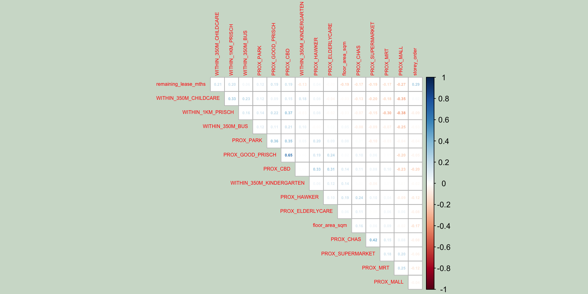

pacman::p_load(sf, spdep, GWmodel, SpatialML,
tmap, rsample, Metrics, tidyverse)08 - Geographically Weighted Predictive Modelling
1 Overview
Predictive modelling uses statistical learning or machine learning techniques to predict outcomes. By and large, the event wants to predict is in the future. However, a set of known outcome and predictors (also known as variables) will be used to calibrate the predictive models.
Geospatial predictive modelling is conceptually rooted in the principle that the occurrences of events being modeled are limited in distribution. When geographically referenced data are used, occurrences of events are neither uniform nor random in distribution over space. There are geospatial factors (infrastructure, sociocultural, topographic, etc.) that constrain and influence where the locations of events occur. Geospatial predictive modeling attempts to describe those constraints and influences by spatially correlating occurrences of historical geospatial locations with environmental factors that represent those constraints and influences.
2 Getting started
In this in-class exercise, we will build predictive model by using geographical random forest method. By the end of this hands-on exercise, we will achieve:
preparing training and test data sets by using appropriate data sampling methods,
calibrating predictive models by using both geospatial statistical learning and machine learning methods,
comparing and selecting the best model for predicting the future outcome,
predicting the future outcomes by using the best model calibrated.
3 The data
Aspatial dataset:
- HDB Resale data: a list of HDB resale transacted prices in Singapore from Jan 2017 onwards. It is in csv format which can be downloaded from Data.gov.sg.
Geospatial dataset:
- MP14_SUBZONE_WEB_PL: a polygon feature data providing information of URA 2014 Master Plan Planning Subzone boundary data. It is in ESRI shapefile format. This data set was also downloaded from Data.gov.sg
Locational factors with geographic coordinates:
Downloaded from Data.gov.sg.
- Eldercare data is a list of eldercare in Singapore. It is in shapefile format.
- Hawker Centre data is a list of hawker centres in Singapore. It is in geojson format.
- Parks data is a list of parks in Singapore. It is in geojson format.
- Supermarket data is a list of supermarkets in Singapore. It is in geojson format.
- CHAS clinics data is a list of CHAS clinics in Singapore. It is in geojson format.
- Childcare service data is a list of childcare services in Singapore. It is in geojson format.
- Kindergartens data is a list of kindergartens in Singapore. It is in geojson format.
Downloaded from Datamall.lta.gov.sg.
- MRT data is a list of MRT/LRT stations in Singapore with the station names and codes. It is in shapefile format.
- Bus stops data is a list of bus stops in Singapore. It is in shapefile format.
Locational factors without geographic coordinates:
- Downloaded from Data.gov.sg.
- Primary school data is extracted from the list on General information of schools from data.gov portal. It is in csv format.
- Retrieved/Scraped from other sources
- CBD coordinates obtained from Google.
- Shopping malls data is a list of Shopping malls in Singapore obtained from Wikipedia.
- Good primary schools is a list of primary schools that are ordered in ranking in terms of popularity and this can be found at Local Salary Forum.
- Downloaded from Data.gov.sg.
4 Installing and Loading R packages
This code chunk performs 3 tasks: - A list called packages will be created and will consists of all the R packages required to accomplish this exercise. - Check if R packages on package have been installed in R and if not, they will be installed. - After all the R packages have been installed, they will be loaded.
| R Package | Description |
|---|---|
| sf | |
| spdep | |
| GWmodel | |
| SpatialML | |
| tmap | |
| rsample | |
| Metrics | |
| tidyverse |
5 Prepare data
5.1 Reading data file to rds
Reading the input data sets. It is in simple feature data frame.
mdata <- read_rds("data/rawdata/mdata.rds")5.2 Data Sampling
The entire data are split into training and test data sets with 65% and 35% respectively by using initial_split() of rsample package. rsample is one of the packages of tigymodels.
set.seed(1234)
resale_split <- initial_split(mdata,
prop = 6.5/10,)
train_data <- training(resale_split)
test_data <- testing(resale_split)write_rds(train_data, "data/model/train_data.rds")
write_rds(test_data, "data/model/test_data.rds")5.3 Computing Correlation Matrix
Before loading the predictors into a predictive model, it is always a good practice to use correlation matrix to examine if there is sign of multicolinearity.
par(bg = "#D0DDD0")
mdata_nogeo <- mdata %>%
st_drop_geometry()
corrplot::corrplot(cor(mdata_nogeo[, 2:17]),
diag = FALSE,
order = "AOE",
tl.pos = "td",
tl.cex = 0.5,
method = "number",
type = "upper",
number.cex = 0.4,
bg = "white")
5.4
6 Retriving the Stored Data
train_data <- read_rds("chap14/data/model/train_data.rds")
test_data <- read_rds("chap14/data/model/test_data.rds")7 Building a non-spatial multiple linear regression
price_mlr <- lm(resale_price ~ floor_area_sqm +
storey_order + remaining_lease_mths +
PROX_CBD + PROX_ELDERLYCARE + PROX_HAWKER +
PROX_MRT + PROX_PARK + PROX_MALL +
PROX_SUPERMARKET + WITHIN_350M_KINDERGARTEN +
WITHIN_350M_CHILDCARE + WITHIN_350M_BUS +
WITHIN_1KM_PRISCH,
data=train_data)
summary(price_mlr)8 gwr predictive method
In this section, you will learn how to calibrate a model to predict HDB resale price by using geographically weighted regression method of GWmodel package.
8.1 Computing adaptive bandwidth
Firstly, bw.gwr() of GWmodel package will be used to determine the optimal bandwidth to be used.
bw_adaptive <- bw.gwr(
formula = resale_price ~ floor_area_sqm +
storey_order + remaining_lease_mths +
PROX_CBD + PROX_ELDERLYCARE + PROX_HAWKER +
PROX_MRT + PROX_PARK + PROX_MALL +
PROX_SUPERMARKET + WITHIN_350M_KINDERGARTEN +
WITHIN_350M_CHILDCARE + WITHIN_350M_BUS +
WITHIN_1KM_PRISCH,
data=train_data,
approach="CV",
kernel="gaussian",
adaptive=TRUE,
longlat=FALSE)
write_rds(bw_adaptive, "chap14/data/model/bw_adaptive.rds")References
- Kam, T. S. (2022, December 8). R for geospatial data science and analytics. https://r4gdsa.netlify.app/
Note